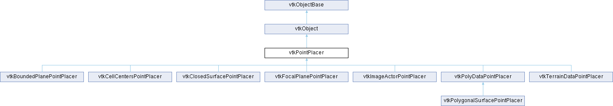

|
Etrek
|
|
Etrek
|
Abstract interface to translate 2D display positions to world coordinates. More...
#include <vtkPointPlacer.h>

Public Member Functions | |
| virtual int | ComputeWorldPosition (vtkRenderer *ren, double displayPos[2], double worldPos[3], double worldOrient[9]) |
| virtual int | ComputeWorldPosition (vtkRenderer *ren, double displayPos[2], double refWorldPos[3], double worldPos[3], double worldOrient[9]) |
| virtual int | ValidateWorldPosition (double worldPos[3]) |
| virtual int | ValidateDisplayPosition (vtkRenderer *, double displayPos[2]) |
| virtual int | ValidateWorldPosition (double worldPos[3], double worldOrient[9]) |
| virtual int | UpdateWorldPosition (vtkRenderer *ren, double worldPos[3], double worldOrient[9]) |
| virtual int | UpdateNodeWorldPosition (double worldPos[3], vtkIdType nodePointId) |
| virtual int | UpdateInternalState () |
| vtkTypeMacro (vtkPointPlacer, vtkObject) | |
| void | PrintSelf (ostream &os, vtkIndent indent) override |
| vtkSetClampMacro (PixelTolerance, int, 1, 100) | |
| vtkGetMacro (PixelTolerance, int) | |
| vtkSetClampMacro (WorldTolerance, double, 0.0, VTK_DOUBLE_MAX) | |
| vtkGetMacro (WorldTolerance, double) | |
| Public Member Functions inherited from vtkObject | |
| vtkBaseTypeMacro (vtkObject, vtkObjectBase) | |
| virtual void | DebugOn () |
| virtual void | DebugOff () |
| bool | GetDebug () |
| void | SetDebug (bool debugFlag) |
| virtual void | Modified () |
| virtual vtkMTimeType | GetMTime () |
| void | RemoveObserver (unsigned long tag) |
| void | RemoveObservers (unsigned long event) |
| void | RemoveObservers (const char *event) |
| void | RemoveAllObservers () |
| vtkTypeBool | HasObserver (unsigned long event) |
| vtkTypeBool | HasObserver (const char *event) |
| vtkTypeBool | InvokeEvent (unsigned long event) |
| vtkTypeBool | InvokeEvent (const char *event) |
| std::string | GetObjectDescription () const override |
| unsigned long | AddObserver (unsigned long event, vtkCommand *, float priority=0.0f) |
| unsigned long | AddObserver (const char *event, vtkCommand *, float priority=0.0f) |
| vtkCommand * | GetCommand (unsigned long tag) |
| void | RemoveObserver (vtkCommand *) |
| void | RemoveObservers (unsigned long event, vtkCommand *) |
| void | RemoveObservers (const char *event, vtkCommand *) |
| vtkTypeBool | HasObserver (unsigned long event, vtkCommand *) |
| vtkTypeBool | HasObserver (const char *event, vtkCommand *) |
| template<class U, class T> | |
| unsigned long | AddObserver (unsigned long event, U observer, void(T::*callback)(), float priority=0.0f) |
| template<class U, class T> | |
| unsigned long | AddObserver (unsigned long event, U observer, void(T::*callback)(vtkObject *, unsigned long, void *), float priority=0.0f) |
| template<class U, class T> | |
| unsigned long | AddObserver (unsigned long event, U observer, bool(T::*callback)(vtkObject *, unsigned long, void *), float priority=0.0f) |
| vtkTypeBool | InvokeEvent (unsigned long event, void *callData) |
| vtkTypeBool | InvokeEvent (const char *event, void *callData) |
| virtual void | SetObjectName (const std::string &objectName) |
| virtual std::string | GetObjectName () const |
| Public Member Functions inherited from vtkObjectBase | |
| const char * | GetClassName () const |
| virtual vtkTypeBool | IsA (const char *name) |
| virtual vtkIdType | GetNumberOfGenerationsFromBase (const char *name) |
| virtual void | Delete () |
| virtual void | FastDelete () |
| void | InitializeObjectBase () |
| void | Print (ostream &os) |
| void | Register (vtkObjectBase *o) |
| virtual void | UnRegister (vtkObjectBase *o) |
| int | GetReferenceCount () |
| void | SetReferenceCount (int) |
| bool | GetIsInMemkind () const |
| virtual void | PrintHeader (ostream &os, vtkIndent indent) |
| virtual void | PrintTrailer (ostream &os, vtkIndent indent) |
| virtual bool | UsesGarbageCollector () const |
Static Public Member Functions | |
| static vtkPointPlacer * | New () |
| Static Public Member Functions inherited from vtkObject | |
| static vtkObject * | New () |
| static void | BreakOnError () |
| static void | SetGlobalWarningDisplay (vtkTypeBool val) |
| static void | GlobalWarningDisplayOn () |
| static void | GlobalWarningDisplayOff () |
| static vtkTypeBool | GetGlobalWarningDisplay () |
| Static Public Member Functions inherited from vtkObjectBase | |
| static vtkTypeBool | IsTypeOf (const char *name) |
| static vtkIdType | GetNumberOfGenerationsFromBaseType (const char *name) |
| static vtkObjectBase * | New () |
| static void | SetMemkindDirectory (const char *directoryname) |
| static bool | GetUsingMemkind () |
Protected Attributes | |
| int | PixelTolerance |
| double | WorldTolerance |
| Protected Attributes inherited from vtkObject | |
| bool | Debug |
| vtkTimeStamp | MTime |
| vtkSubjectHelper * | SubjectHelper |
| std::string | ObjectName |
| Protected Attributes inherited from vtkObjectBase | |
| std::atomic< int32_t > | ReferenceCount |
| vtkWeakPointerBase ** | WeakPointers |
Additional Inherited Members | |
| Protected Member Functions inherited from vtkObject | |
| void | RegisterInternal (vtkObjectBase *, vtkTypeBool check) override |
| void | UnRegisterInternal (vtkObjectBase *, vtkTypeBool check) override |
| void | InternalGrabFocus (vtkCommand *mouseEvents, vtkCommand *keypressEvents=nullptr) |
| void | InternalReleaseFocus () |
| Protected Member Functions inherited from vtkObjectBase | |
| virtual void | ReportReferences (vtkGarbageCollector *) |
| vtkObjectBase (const vtkObjectBase &) | |
| void | operator= (const vtkObjectBase &) |
| Static Protected Member Functions inherited from vtkObjectBase | |
| static vtkMallocingFunction | GetCurrentMallocFunction () |
| static vtkReallocingFunction | GetCurrentReallocFunction () |
| static vtkFreeingFunction | GetCurrentFreeFunction () |
| static vtkFreeingFunction | GetAlternateFreeFunction () |
Abstract interface to translate 2D display positions to world coordinates.
Most widgets in VTK have a need to translate of 2D display coordinates (as reported by the RenderWindowInteractor) to 3D world coordinates. This class is an abstraction of this functionality. A few subclasses are listed below:
1) vtkFocalPlanePointPlacer: This class converts 2D display positions to world positions such that they lie on the focal plane.
2) vtkPolygonalSurfacePointPlacer: Converts 2D display positions to world positions such that they lie on the surface of one or more specified polydatas.
3) vtkImageActorPointPlacer: Converts 2D display positions to world positions such that they lie on an ImageActor
4) vtkBoundedPlanePointPlacer: Converts 2D display positions to world positions such that they lie within a set of specified bounding planes.
5) vtkTerrainDataPointPlacer: Converts 2D display positions to world positions such that they lie on a height field.
Point placers provide an extensible framework to specify constraints on points. The methods ComputeWorldPosition, ValidateDisplayPosition and ValidateWorldPosition may be overridden to dictate whether a world or display position is allowed. These classes are currently used by the HandleWidget and the ContourWidget to allow various constraints to be enforced on the placement of their handles.
|
virtual |
Given a renderer, a display position, and a reference world position, compute the new world position and orientation of this point. This method is typically used by the representation to move the point. A return value of 1 indicates that constraints of the placer are met.
Reimplemented in vtkBoundedPlanePointPlacer, vtkCellCentersPointPlacer, vtkClosedSurfacePointPlacer, vtkFocalPlanePointPlacer, vtkPolyDataPointPlacer, vtkPolygonalSurfacePointPlacer, and vtkTerrainDataPointPlacer.
|
virtual |
Given a renderer and a display position in pixel coordinates, compute the world position and orientation where this point will be placed. This method is typically used by the representation to place the point initially. A return value of 1 indicates that constraints of the placer are met.
Reimplemented in vtkBoundedPlanePointPlacer, vtkCellCentersPointPlacer, vtkClosedSurfacePointPlacer, vtkFocalPlanePointPlacer, vtkImageActorPointPlacer, vtkPolyDataPointPlacer, vtkPolygonalSurfacePointPlacer, and vtkTerrainDataPointPlacer.
|
static |
Instantiate this class.
|
overridevirtual |
Methods invoked by print to print information about the object including superclasses. Typically not called by the user (use Print() instead) but used in the hierarchical print process to combine the output of several classes.
Reimplemented from vtkObject.
Reimplemented in vtkPolyDataPointPlacer, vtkPolygonalSurfacePointPlacer, and vtkTerrainDataPointPlacer.
|
inlinevirtual |
Called by the representation to give the placer a chance to update itself.
Reimplemented in vtkImageActorPointPlacer.
|
virtual |
Give the placer a chance to update the node information, if any. Most placers do not maintain any cached node information. vtkPolygonalSurfacePointPlacer is one that does. It stores the point id (id on the surface mesh) on which its drawn. The second argument may be used to pass that in. Update world position
Reimplemented in vtkPolygonalSurfacePointPlacer.
|
virtual |
Given a current renderer, world position and orientation, update them according to the constraints of the placer. This method is typically used when UpdateContour is called on the representation, which must be called after changes are made to the constraints in the placer. A return value of 1 indicates that the point has been updated. A return value of 0 indicates that the point could not be updated and was left alone. By default this is a no-op - leaving the point as is.
Reimplemented in vtkBoundedPlanePointPlacer, and vtkImageActorPointPlacer.
|
virtual |
Given a display position, check the validity of this position.
Reimplemented in vtkCellCentersPointPlacer, vtkPolyDataPointPlacer, vtkPolygonalSurfacePointPlacer, and vtkTerrainDataPointPlacer.
|
virtual |
Given a world position check the validity of this position according to the constraints of the placer.
Reimplemented in vtkBoundedPlanePointPlacer, vtkCellCentersPointPlacer, vtkClosedSurfacePointPlacer, vtkFocalPlanePointPlacer, vtkImageActorPointPlacer, vtkPolyDataPointPlacer, vtkPolygonalSurfacePointPlacer, and vtkTerrainDataPointPlacer.
|
virtual |
Given a world position and a world orientation, validate it according to the constraints of the placer.
Reimplemented in vtkBoundedPlanePointPlacer, vtkCellCentersPointPlacer, vtkClosedSurfacePointPlacer, vtkFocalPlanePointPlacer, vtkImageActorPointPlacer, vtkPolyDataPointPlacer, vtkPolygonalSurfacePointPlacer, and vtkTerrainDataPointPlacer.
| vtkPointPlacer::vtkSetClampMacro | ( | PixelTolerance | , |
| int | , | ||
| 1 | , | ||
| 100 | ) |
Set/get the tolerance used when performing computations in display coordinates.
| vtkPointPlacer::vtkSetClampMacro | ( | WorldTolerance | , |
| double | , | ||
| 0. | 0, | ||
| VTK_DOUBLE_MAX | ) |
Set/get the tolerance used when performing computations in world coordinates.
| vtkPointPlacer::vtkTypeMacro | ( | vtkPointPlacer | , |
| vtkObject | ) |
Standard methods for instances of this class.